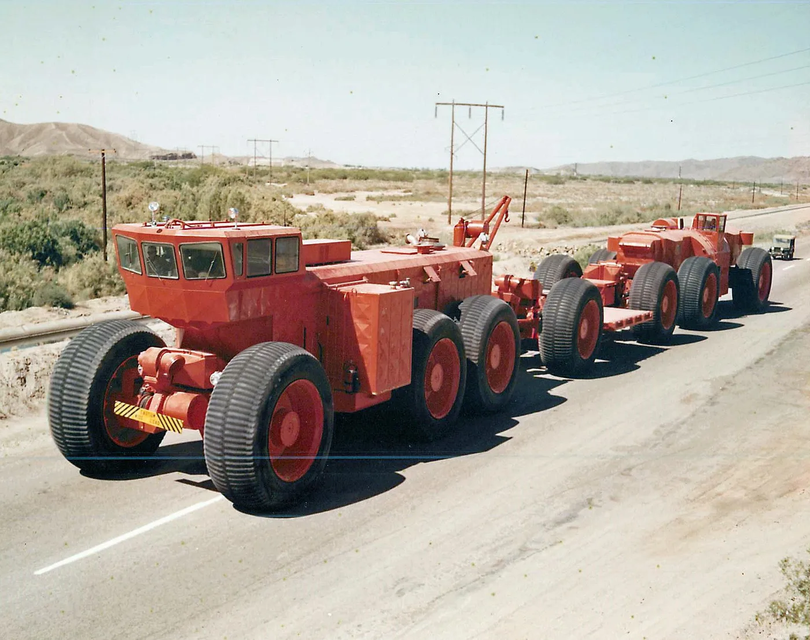
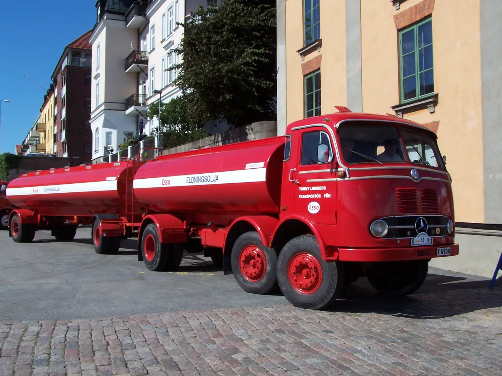
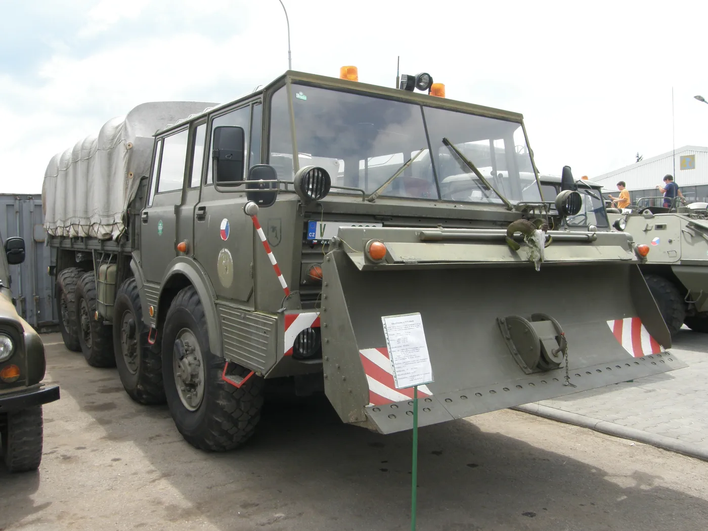
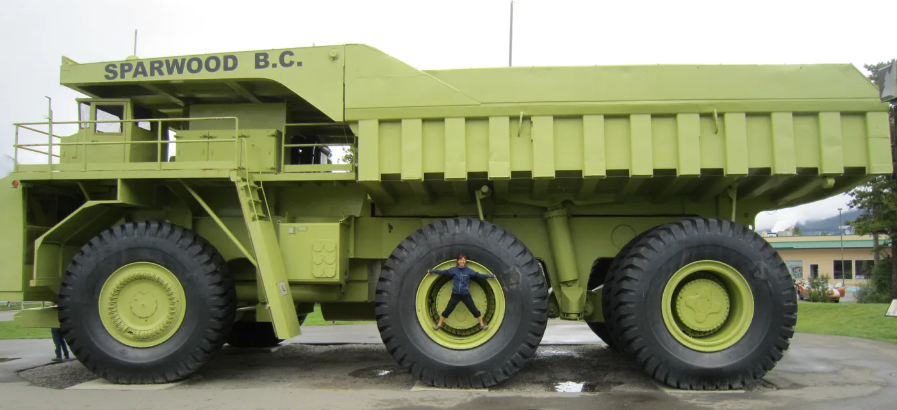

Los camiones suelen parecerse porque deben resolver problemas similares: transportar peso, mantener el control y poder repararse. Aun así, algunas misiones llevaron a diseños que hoy parecen salidos de otra época. Esta selección reúne cinco vehículos reales, documentados por fabricantes, museos y el Ejército estadounidense. “Más raros” es un criterio editorial: no existe una clasificación mundial que los ordene.
También conviene distinguirlos. El Mercedes-Benz LP 333 y el Tatra 813 pertenecieron a familias que efectivamente se fabricaron. El Berliet T100 se construyó en apenas cuatro ejemplares; el LeTourneau TC-497 fue experimental y el Terex Titan, un único prototipo que llegó a trabajar. Ninguno fue un camión de reparto normal: cada forma extraña respondía a una carga, un terreno o una regulación particular.
1. Berliet T100: un camión para cruzar el Sahara
El T100 nació de la prospección petrolera francesa en el Sahara. Había que llevar equipo pesado hasta lugares donde un camión convencional podía hundirse o perder movilidad. Renault Trucks sitúa el proyecto en 1957 y documenta que se construyeron solo cuatro ejemplares. El n.º 2, fabricado en 1958, se destinó a compañías petroleras en el sur de Argelia.
Su apariencia resulta difícil de olvidar: una cabina elevada, un capó enorme, seis ruedas de tamaño extraordinario y una plataforma concebida para cargas de campo petrolero. Según la ficha difundida por Renault Trucks para el n.º 2, pesaba unas 50 toneladas vacío y estaba previsto para otras 50 de carga. El motor Cummins V12 entregaba 700 caballos. Esas cifras describen ese ejemplar, no necesariamente cada T100, porque la serie fue muy corta y tuvo variantes.
La rareza no era un capricho estético. Neumáticos grandes y tracción adecuada tenían sentido al atravesar arena con material indivisible. Una anécdota verificable ilustra su utilidad: Renault Trucks relata que el n.º 2 llevó barita para apoyar la extinción del incendio de un pozo en Gassi-Touil entre 1961 y 1962. Después de su vida de trabajo quedó preservado por la Fondation Berliet. Historia y ficha del fabricante.
2. LeTourneau TC-497: un tren sin vías en el desierto

Si el Berliet parecía demasiado grande para ser un camión, el TC-497 Overland Train parecía demasiado largo para ser un solo vehículo. El Ejército de Estados Unidos lo probó en Yuma en 1962 como respuesta a un problema logístico: transportar grandes cargas por regiones sin una red suficiente de carreteras o ferrocarriles.
La descripción oficial habla de 13 unidades, 54 ruedas motrices, unos 572 pies de largo (aproximadamente 174 metros) y capacidad para 150 toneladas de carga. Era una solución articulada: una cabina de control al frente y una serie de módulos detrás, más cercana a un tren terrestre que a un camión con semirremolque corriente. La fotografía muestra una configuración parcial, por lo que no debe confundirse con la longitud máxima que cita el Ejército.
Funcionó en las pruebas, pero no entró en servicio general. El mismo organismo señala que los helicópteros de carga pesada hicieron menos atractiva la idea antes de que pudiera desplegarse. El conjunto fue vendido como chatarra en 1968; sobrevivió la cabina de mando, conservada como pieza de exhibición en Yuma. La lección es sencilla: una solución técnica puede cumplir su misión experimental y, aun así, perder frente a otra forma de transporte. Crónica del Ejército estadounidense.
3. Mercedes-Benz LP 333: el “ciempiés” de dos ejes delanteros

No todos los camiones extraños fueron prototipos gigantes. El LP 333 fue una respuesta ingeniosa a los límites de peso y dimensiones que cambiaban en Alemania a fines de los años cincuenta. Mercedes-Benz explica que se fabricó entre 1958 y 1961 como un rígido de tres ejes, con dos ejes delanteros directrices y un peso total permitido de 16 toneladas. Su aspecto le ganó el apodo popular de Tausendfüßler, “ciempiés”.
Visto de costado, la distancia entre las dos parejas de ruedas delanteras altera la silueta habitual de un camión. Pero la disposición tenía una razón práctica: repartía la carga entre más ejes dentro de la normativa de entonces. Según la explicación histórica de la marca, el proyecto aprovechaba que un vehículo de tres ejes podía tener un peso autorizado mayor que uno de dos ejes.
El LP 333 demuestra que las reglas también diseñan vehículos. Cuando el marco regulatorio cambia, una arquitectura que parecía brillante puede dejar de ser necesaria. Conviene no convertir esa rareza en una crítica técnica: era una solución situada en un momento preciso, no un error de ingeniería. Contexto histórico de Mercedes-Benz.
4. Tatra 813 Kolos: ocho ruedas y columna vertebral

El Tatra 813 nació de un encargo militar checoslovaco para remolcar en terrenos difíciles. El museo de camiones Tatra sitúa el inicio de producción en 1967 y explica que la primera versión fue el Kolos 8×8, con cabina de cuatro puertas para hasta siete personas. No era un 8×8 decorativo: cuatro ejes motrices, dos delanteros directrices y ruedas preparadas para salir del asfalto definían su misión.
Su detalle técnico más singular era el chasis de tubo central, la conocida columna vertebral de Tatra. El museo documenta reductoras en las ruedas y ajuste de presión de los neumáticos desde la cabina, una ayuda para adaptar la huella al terreno. En variantes militares podía montar una pala frontal. Por eso la foto no muestra un accesorio improvisado, sino una posibilidad contemplada para este tipo de vehículo.
La familia 813 no se limitó al Kolos militar. Hubo derivaciones para puentes, pontones, grúas, obra y remolque pesado. El museo cifra en 11.751 unidades la producción total de la serie Tatra 813 hasta fines de 1982: no es una cifra exclusiva del Kolos 8×8. Lo raro aquí no es que se fabricara una sola pieza, sino la combinación de soluciones en un camión que efectivamente llegó a muchos trabajos. Ficha del Museo Tatra.
5. Terex 33-19 Titan: un solo volquete del tamaño de un edificio

El Titan de Terex no se hizo para una ruta ni para un desierto petrolero, sino para minería a cielo abierto. Su caja basculante, altura y neumáticos gigantes lo ubican en la categoría de camión fuera de ruta. El cronograma histórico publicado por Terex lo identifica como el mayor camión de su etapa de desarrollo en los años setenta y aclara un dato crucial: se construyó un único prototipo.
Ese prototipo sí trabajó. La propia empresa indica que permaneció en servicio hasta 1990 y que hoy se exhibe en Sparwood, Canadá, cerca de la mina donde operó. Por eso la foto actual no documenta una jornada minera: muestra el vehículo preservado. Su escala se aprecia mejor con una persona al lado de la rueda que con una cifra aislada.
En un transporte de carga común, un camión único sería una pesadilla para repuestos y mantenimiento. En una mina, una máquina muy especializada puede justificar ese esfuerzo si mueve grandes cantidades en trayectos controlados. El Titan recuerda que “camión” también designa vehículos que nunca circularían por una carretera pública. Cronología oficial de Terex.
Qué tienen en común estos cinco diseños
Vistos juntos, parecen competir por ser los más extravagantes. En realidad resolvían problemas diferentes: arena y cargas indivisibles, territorio sin vías, límites de peso por eje, terreno militar y movimiento masivo de material en una mina. La forma surge de la misión. Que hoy parezcan extraños no significa que fueran irracionales en su contexto.
Hay otra diferencia importante: rareza visual no es sinónimo de fracaso. El LP 333 se fabricó durante años; la familia Tatra 813 superó las once mil unidades. El Berliet prestó servicios especiales. El Titan fue único, pero trabajó hasta su retiro. El TC-497, en cambio, quedó como experimento porque cambiaron las alternativas logísticas.
Para lectores argentinos, la comparación no implica que estos modelos hayan sido habituales en las rutas del país. Es una mirada a la historia del vehículo industrial: antes de enamorarse de una ficha o una foto, vale preguntar qué carga debía mover, en qué terreno, bajo qué reglas y cómo se sostenía su funcionamiento. Esas preguntas siguen vigentes cuando se elige o mantiene un camión actual.